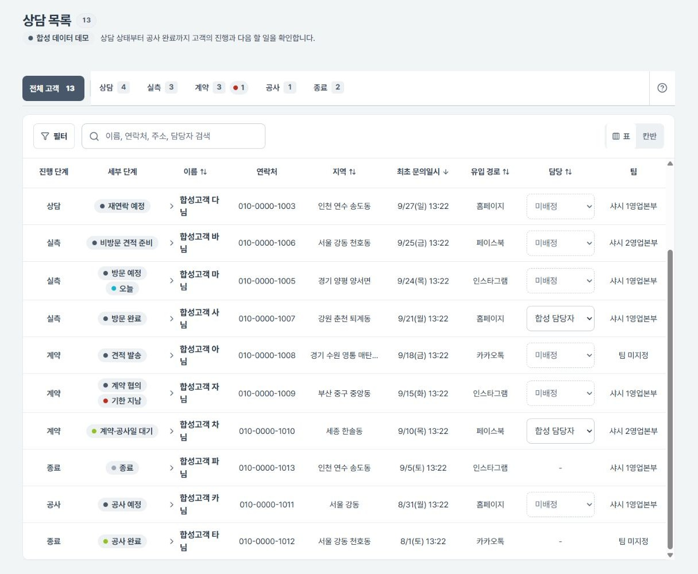
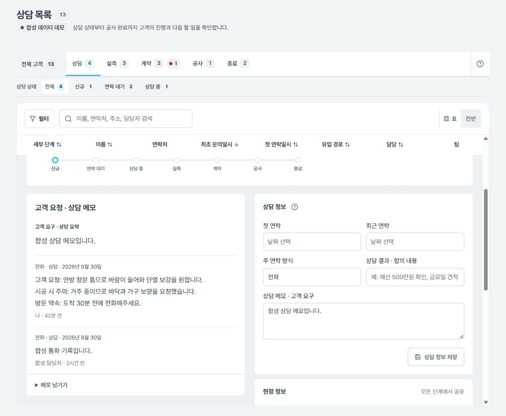
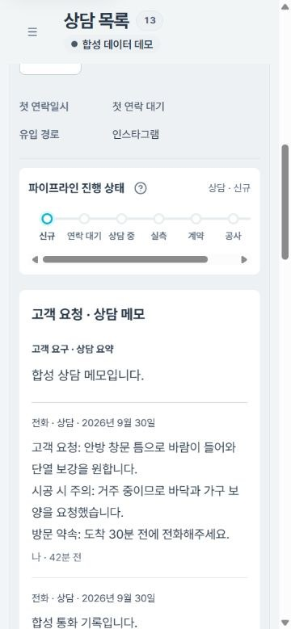
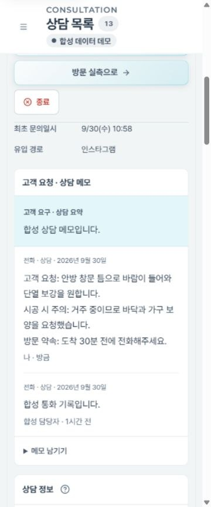

한눈에 보기
- 어디서 · 무슨 일
- BX컨설팅 세일즈포스팀 인턴 · 고객사에 CRM 서비스를 제안하기 위한 프로토타입
- 주어진 과제
- 광고로 들어온 고객의 상담부터 공사까지를 엑셀 한 줄로 관리하고 있어, 누가 어느 단계를 맡았고 어디서 막혔는지 보이지 않았습니다.
- 내 역할
- 요구 정리·화면 결정·검수. 요구마다 출처(팀장 피드백과 본인 판단)를 나눠 기록했고, 구현은 역할을 나눈 AI 코딩 에이전트에 맡긴 뒤 PC·모바일 화면으로 직접 확인했습니다.
- 결과
- 고객 목록·상세·단계 이동·종료 흐름과 권한·로그인 구조를 갖춘 제안용 테스트 빌드(v3.1.0)를 만들었고, 개선 과제 24건을 기록·관리했습니다.
- 이 경험으로 할 수 있는 일
- 현업의 엑셀·수작업 흐름을 단계와 권한이 있는 도구로 옮길 때, 요구를 정리해 AI 개발 도구에 맡기고 결과를 화면으로 검수할 수 있습니다.
진행 과정
- 데이터 옮기기원본 24열을 새 단계·세부 상태로 옮기는 대응표를 먼저 만들고, 테스트 이관을 통과시킨 뒤 본 이관을 했습니다.
- 단계별 화면상담은 연락·메모, 실측은 일정·견적, 계약은 금액·공사일처럼 그 단계에 필요한 입력만 보이게 했습니다.
- 화면 기준"처음 쓰는 직원도 질문 없이 쓸 수 있을 것"(팀장 피드백)을 기준으로 색·버튼·용어를 덜어냈습니다.
- 단계 이동 규칙담당자는 다음 단계로 이어지고, 실측은 날짜·담당자 없이 확정되지 않으며, 종료 사유는 칩으로 고르게 했습니다.
- 권한과 로그인관리자·중간관리자·담당자 3역할, 관리자 승인 후 접근, 비밀번호 없이 구글 로그인·이메일 코드만 허용했습니다.
- AI 작업 방식기획·UX 설계·구현·검수 에이전트를 나누고, 커밋·DB 반영·배포는 각각 사람이 승인했습니다. 개발에는 합성 데이터만 썼습니다.
만든 자료

화면 결정상담 목록 (합성 데이터)
화면 결정고객 상세 (합성 데이터)
화면 결정모바일 고객 상세
화면 결정모바일 단계 이동·메모고객사 정보와 실제 고객 데이터는 넣지 않았습니다. 화면은 모두 합성 데이터로 만든 검수 화면입니다.